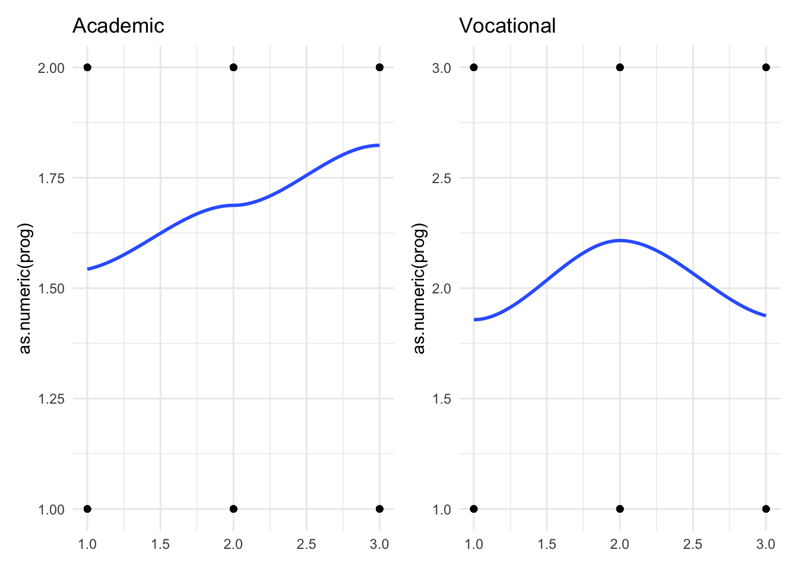
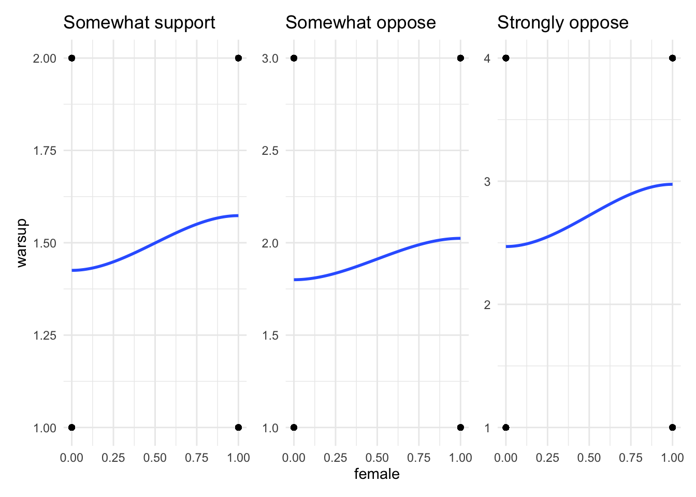
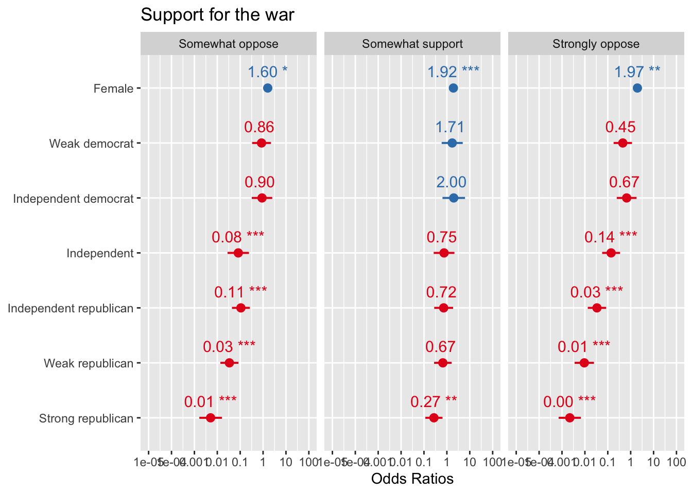

library(tidyverse)
library(janitor)
library(skimr)
library(nnet)
library(broom)
library(gtsummary)
library(sjPlot)Introduction to Multinomial Models
Set up
This section uses the following packages:
Introduction
In political science, we are often interested in measuring the probability of success for more than two outcomes. For example, we may want to know the probability that an individual will vote for a specific candidate in an election. If our individuals have more than two candidates from which to choose, we can take advantage of multinomial modelling.
Multinomial models are linear regression models that measure the probability of success across outcomes with more than two options. As with binary outcomes, we can choose between two common approaches to these models: logit and probit regression. Multinomial logit and probit models are an extension of the binary latent variable models we discussed in the previous section. Rather than modelling the choice made between two options - success or failure, vote or not vote - we can efficiently model the choice between many different options, for example: strongly favour, weakly favour, weakly dislike, strongly dislike.
Unlike previously, the choice between a multinomial logit model and a multinomial probit model is not trivial. This difference centres on the Independence of Irrelevant Alternatives (IIA) assumption. We will discuss this shortly.
To explore this question, we will look at students’ level of support for the Iraq war based on their gender and their party affiliation (measured on a seven-point scale).
Let’s load and clean our data:
student_survey <- rio::import("/Users/harrietgoers/Downloads/student vote GVPT 729a.dta") |>
transmute(warsup = factor(warsup,
levels = c(1, 2, 3, 4),
labels = c("Strongly support",
"Somewhat support",
"Somewhat oppose",
"Strongly oppose")),
female = factor(female,
levels = c(0, 1),
labels = c("Not female", "Female")),
pid = factor(pid,
levels = c(1, 2, 3, 4, 5, 6, 7),
labels = c("Strong democrat",
"Weak democrat",
"Independent democrat",
"Independent",
"Independent republican",
"Weak republican",
"Strong republican"))) |>
labelled::set_variable_labels(warsup = "Support for the war",
female = "Female",
pid = "Party ID") |>
drop_na()
head(student_survey) warsup female pid
1 Somewhat oppose Female Weak democrat
2 Somewhat support Female Strong republican
3 Strongly support Not female Independent
4 Strongly support Female Strong republican
5 Strongly support Not female Independent republican
6 Strongly support Female Strong republicanLet’s look at our dataset:
skim(student_survey)| Name | student_survey |
| Number of rows | 1154 |
| Number of columns | 3 |
| _______________________ | |
| Column type frequency: | |
| factor | 3 |
| ________________________ | |
| Group variables | None |
Variable type: factor
| skim_variable | n_missing | complete_rate | ordered | n_unique | top_counts |
|---|---|---|---|---|---|
| warsup | 0 | 1 | FALSE | 4 | Str: 379, Som: 275, Str: 272, Som: 228 |
| female | 0 | 1 | FALSE | 2 | Fem: 649, Not: 505 |
| pid | 0 | 1 | FALSE | 7 | Str: 244, Str: 218, Wea: 192, Ind: 164 |
Multinomial logit regression
In a binomial logistic regression, we measure the probability that our outcome, \(y\), will take on one of two options: usually \(y = 0\) or \(y = 1\). For multinomial logit regression, we model the probability that our outcome, \(y\), will take on one of more than two options. You need to select a baseline category from which you will compare your probability of success for all other categories.
A multinomial model is genuinely an extension of binomial logistic regression. We could fit a series of binomial logistic regression models and get the same outcome.1
Recall that a binary logistic regression is modelled as such:
\[ Pr(Y = 1 | X) = ln(\frac{P}{1-P}) = \beta_0 + \beta_1X_1 + ... = \beta_kX_k \]
This provides the log odds ratio of success, or \(Y = 1\) for a binary outcome.
For multinomial logistic regression, our outcome is no longer the log odds of success against failure. Instead, we are measuring the log odds of the probability of one category over the probability of a base category. This is called the relative log odds ratio.
\[ ln(\frac{P_{category 2}}{P_{category 1}}) \]
Let’s explore this by looking at the level of support university students had for the Iraq war. Our outcome variable can take on one of four options: strong opposition, weak opposition, weak support, and strong support for the war. Let’s pick strong support as our baseline category. We now need to calculate three equations that model the relative log odds ratio that an individual will express strong opposition, weak opposition, or weak support for the war relative to the probability that they will express strong support for the war:
\[ Pr(y = strong\_opposition | X) = log(\frac{Pr(y = strong\_opposition)}{Pr(y = strong\_support)}) \]
\[ Pr(y = weak\_opposition | X) = log(\frac{Pr(y = weak\_opposition)}{Pr(y = strong\_support)}) \]
\[ Pr(y = weak\_support | X) = log(\frac{Pr(y = weak\_support)}{Pr(y = strong\_support)}) \]
Assumptions
Independence of Irrelevant Alternatives assumption
Multinomial logit assumes that the relative probability of existing choices is not affected by changes to the choice set. For example, if you remove a choice from your model, that choice’s probability of success will be distributed evenly among the remaining choices. Their relative contribution to the probability of success remains the same. This is a very strong assumption.
For example, I am choosing between four candidates for the Democratic primary. The probability that I will vote for each is defined by my preferences for their policy platforms. They are as below:
\[ Pr(cand\_1) = \frac{1}{10} \]
\[ Pr(cand\_2) = \frac{1}{2} \]
\[ Pr(cand\_3) = \frac{3}{10} \]
\[ Pr(cand\_4) = \frac{1}{10} \]
Candidate 3 drops out of the race. They were a rather centerist candidate among Democrats, so their supporters do not flow to one specific candidate among those left. I follow this general trend and the probability that I would vote for that candidate distributes itself eveningly among the remaining candidates. Each gets a third of Candidate 3’s probability: \(\frac{1}{10}\). The new distribution of the probability that I will vote for the candidates is as follows:
\[ Pr(cand\_1) = \frac{1}{5} \]
\[ Pr(cand\_2) = \frac{3}{5} \]
\[ Pr(cand\_4) = \frac{1}{5} \]
Because the probability of success depends on the candidate, I should use a multinomial logistic regression to model my preferences across these choices.
Categorical outcome
Like binary logistic regression, this model assumes that the outcome variable is categorical. This outcome can be either ordered or unordered; however, other models are better at estimating ordered outcomes.
The log-odds of the outcome and independent variable have a linear relationship
Like binary logistic regression, this model assumes that the relationship between the log odds of the outcome variable and any continous independent variables is linear. In other words, our latent variable, \(z_i\), must follow linear conventions (all \(\beta\)s must be linear).
Independent errors
All observations should be independent of each other. There should not be any structural clustering. For example, if your data includes measures from the same individual over time, your errors are not independent of each other (they are clustered by individual).
No (nearing) multicolinearity
This is a standard warning in linear regression modelling. You should never include perfectly colinear variables in your model. If some of your variables are nearing perfect colinearity, you should exclude some or provide a good theoretical justification for including them in your model.
The model
Formally, we define the probability of success for each choice as:
\[ Pr(y_i = m | x_i) = \frac{e^{x_i\beta(m)}}{\sum^{J}_{j = 1}e^{x_i\beta(j)}} \]
Where \(m\) is the option you have set to the baseline and \(j\) is all other options.
Let’s visualise the relationship between support for the war and gender:
p1 <- student_survey |>
filter(warsup == "Strongly support" | warsup == "Somewhat support") |>
ggplot(aes(x = as.numeric(female), y = as.numeric(warsup))) +
geom_point() +
geom_smooth(method = "loess", se = F) +
theme_minimal() +
labs(title = "Somewhat support",
x = NULL)
p2 <- student_survey |>
filter(warsup == "Strongly support" | warsup == "Somewhat oppose") |>
ggplot(aes(x = as.numeric(female), y = as.numeric(warsup))) +
geom_point() +
geom_smooth(method = "loess", se = F) +
theme_minimal() +
labs(title = "Somewhat oppose",
y = NULL)
p3 <- student_survey |>
filter(warsup == "Strongly support" | warsup == "Strongly oppose") |>
ggplot(aes(x = as.numeric(female), y = as.numeric(warsup))) +
geom_point() +
geom_smooth(method = "loess", se = F) +
theme_minimal() +
labs(title = "Strongly oppose",
x = NULL,
y = NULL)
p1 | p2 | p3
And for party ID:
p1 <- student_survey |>
filter(warsup == "Strongly support" | warsup == "Somewhat support") |>
ggplot(aes(x = as.numeric(pid), y = as.numeric(warsup))) +
geom_point() +
geom_smooth(method = "loess", se = F) +
theme_minimal() +
labs(title = "Somewhat support",
x = NULL)
p2 <- student_survey |>
filter(warsup == "Strongly support" | warsup == "Somewhat oppose") |>
ggplot(aes(x = as.numeric(pid), y = as.numeric(warsup))) +
geom_point() +
geom_smooth(method = "loess", se = F) +
theme_minimal() +
labs(title = "Somewhat oppose",
y = NULL)
p3 <- student_survey |>
filter(warsup == "Strongly support" | warsup == "Strongly oppose") |>
ggplot(aes(x = as.numeric(pid), y = as.numeric(warsup))) +
geom_point() +
geom_smooth(method = "loess", se = F) +
theme_minimal() +
labs(title = "Strongly oppose",
x = NULL,
y = NULL)
p1 | p2 | p3
We can see here that the relationship between these independent variables and an individual’s level of support for the war is different based on the choice at hand. Multinomial modelling allows us to measure this. We are essentially developing a different model for each outcome option: strongly support vs. strong oppose, strongly support vs. weakly oppose, and strongly support vs. weakly support.
Let’s fit our model using nnet::multinom() and display the results using broom::tidy():
m1 <- multinom(warsup ~ female + pid, data = student_survey)# weights: 36 (24 variable)
initial value 1599.783693
iter 10 value 1269.729784
iter 20 value 1238.972501
iter 30 value 1232.894042
final value 1232.880028
convergedtidy(m1)# A tibble: 24 × 6
y.level term estimate std.error stati…¹ p.value
<chr> <chr> <dbl> <dbl> <dbl> <dbl>
1 Somewhat support (Intercept) 0.239 0.427 0.560 5.76e-1
2 Somewhat support femaleFemale 0.655 0.181 3.61 3.06e-4
3 Somewhat support pidWeak democrat 0.535 0.540 0.991 3.22e-1
4 Somewhat support pidIndependent democrat 0.691 0.578 1.20 2.32e-1
5 Somewhat support pidIndependent -0.284 0.531 -0.535 5.93e-1
6 Somewhat support pidIndependent republican -0.323 0.484 -0.667 5.04e-1
7 Somewhat support pidWeak republican -0.406 0.450 -0.902 3.67e-1
8 Somewhat support pidStrong republican -1.30 0.439 -2.97 3.01e-3
9 Somewhat oppose (Intercept) 1.70 0.377 4.52 6.30e-6
10 Somewhat oppose femaleFemale 0.468 0.222 2.11 3.49e-2
# … with 14 more rows, and abbreviated variable name ¹statisticHere, we can see that the model has produced different coefficients for each of our independent variables for each outcome option. The first column tells us which outcome option we are modelling: weak support, weak opposition, and strong opposition.
We can more formally present these results using gtsummary::tbl_regression():
tbl_regression(m1, exponentiate = T)| Characteristic | OR1 | 95% CI1 | p-value |
|---|---|---|---|
| Somewhat support | |||
| Female | |||
| Not female | — | — | |
| Female | 1.92 | 1.35, 2.75 | <0.001 |
| Party ID | |||
| Strong democrat | — | — | |
| Weak democrat | 1.71 | 0.59, 4.92 | 0.3 |
| Independent democrat | 2.00 | 0.64, 6.19 | 0.2 |
| Independent | 0.75 | 0.27, 2.13 | 0.6 |
| Independent republican | 0.72 | 0.28, 1.87 | 0.5 |
| Weak republican | 0.67 | 0.28, 1.61 | 0.4 |
| Strong republican | 0.27 | 0.11, 0.64 | 0.003 |
| Somewhat oppose | |||
| Female | |||
| Not female | — | — | |
| Female | 1.60 | 1.03, 2.47 | 0.035 |
| Party ID | |||
| Strong democrat | — | — | |
| Weak democrat | 0.86 | 0.33, 2.21 | 0.7 |
| Independent democrat | 0.90 | 0.32, 2.51 | 0.8 |
| Independent | 0.08 | 0.03, 0.24 | <0.001 |
| Independent republican | 0.11 | 0.04, 0.26 | <0.001 |
| Weak republican | 0.03 | 0.01, 0.08 | <0.001 |
| Strong republican | 0.01 | 0.00, 0.02 | <0.001 |
| Strongly oppose | |||
| Female | |||
| Not female | — | — | |
| Female | 1.97 | 1.30, 2.98 | 0.001 |
| Party ID | |||
| Strong democrat | — | — | |
| Weak democrat | 0.45 | 0.18, 1.14 | 0.092 |
| Independent democrat | 0.67 | 0.25, 1.80 | 0.4 |
| Independent | 0.14 | 0.06, 0.34 | <0.001 |
| Independent republican | 0.03 | 0.01, 0.08 | <0.001 |
| Weak republican | 0.01 | 0.00, 0.02 | <0.001 |
| Strong republican | 0.00 | 0.00, 0.01 | <0.001 |
| 1 OR = Odds Ratio, CI = Confidence Interval | |||
And visualise our results using sjPlot::plot_model():
plot_model(m1, show.values = T, value.offset = .3)
We will discuss interpreting these coefficients in the next section.
Multinomial probit
The process for defining the probability of success for more than two options remains similar to the multinomial logistic regression except that the multinomial probit model allows the errors across choices to be correlated. This means that our assumption that adding or removing choices does not disturb the balance of probabilities of success between the remaining choices does not need to hold. This makes multinomial probit regression a better choice for exploring choice entry and exit.
A more flexible model
To illustrate, let’s consider which type of transport people take to work in the morning. Suppose people can choose between riding a red bus, a train, or driving a car to work. The probabilities are:
\[ Pr(red bus) = \frac{1}{6} \]
\[ Pr(train) = \frac{2}{6} \]
\[ Pr(car) = \frac{3}{6} \]
Therefore, the odds of taking a red bus to train are \(\frac{\frac{1}{6}}{\frac{2}{6}} = \frac{1}{2}\). Now, let’s add the option of taking a blue bus. Will people split evenly across the blue bus, red bus, train, or car? Unlikely: their transport decision is probably not influenced by the colour of their options. Rather, people will likely be split between the red and blue bus, with people who take the train or drive their car unaffected.
Therefore, the probabilities change:
\[ Pr(red bus) = \frac{1}{12} \]
\[ Pr(blue bus) = \frac{1}{12} \]
\[ Pr(train) = \frac{2}{6} \]
\[ Pr(car) = \frac{3}{6} \]
Therefore, the odds of taking a red bus to train are now \(\frac{\frac{1}{12}}{\frac{2}{6}} \ne \frac{1}{2}\). This violates the IIA assumption. We should not, therefore, use multinomial logit regression to model this relationship.
Footnotes
Well… almost the same outcome. Multinomial regression is more efficient. Our errors will be slightly different to those we would obtain if we fit multiple binary regressions.↩︎